Aturdimiento
Stun · 5 s · recarga 200 s
Una granada eléctrica aturde a los enemigos. Es la huida más fiable.
Primero: Duración extendida (8 s) → Radio ampliado → Desarme
Lo mejor de cada ranura y en qué orden comprarlo, del nivel 4 al 50. Sin teoría: qué poner primero y qué dejar de opción.
Todo cuesta 2 vales (vouchers), y los vales solo salen al subir de nivel: 3 por nivel hasta el 15, 2 hasta el 85 y 1 hasta el 99. No los gastes en lo que no usas.
Aún no tienes artefacto: es lo primero (2 vales) y Duración extendida (2). Luego las recetas Técnica de autodefensa y Corre y derriba puertas (4). Te sobra 1.
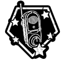
AturdimientoDuración extendida2 recetas cat. 1Cada nivel te da 3 vales. Completa las 7 recetas de la categoría 1 y ponle Radio ampliado al Aturdimiento.
Haces menos ruido al correr y con las puertas. Opcional: Slippers (silencio al caminar sobre cristales).
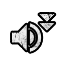
Noise ReductionTe escondes y recuperas un tramo de vida. Opcional: Hide and Breathe.
 Hide and Heal
Hide and HealEs de relleno hasta el 35. Recetas: Inventario ampliado → Potenciamiento de velocidad → Resiliencia.
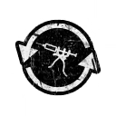
Double DosesInventario ampliadoLos químicos de impostores (0/11) solo sirven si juegas de impostor. Si no, no compres ninguno.
Un golpe que te mataría te deja a 1 de vida, una vez cada 5 min.
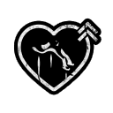
Last ChanceBackpack te da +1 hueco. Pacificador: te revives solo una vez por prueba y una vez revives a un aliado a distancia.
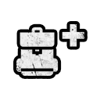
Backpack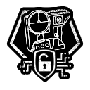
Interceptor · PacificadorRompes puertas y tablones de un golpe, y abres solo las puertas de dos personas.
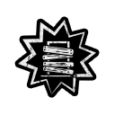
SmashEmpiezas con un potenciador de vida, aguante o batería. Recetas: Recuperación de resistencia → Rejuvenecer → Resistencia.
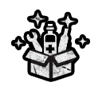
BoostedXP fija por prueba: Estándar 500 · Intensiva 1.500 · Psicocirugía 3.000 (×6). La nota también cuenta.
Se compran a Noakes. Hay 6, y el artefacto y cada mejora cuestan 2 vales. Primero compra las mejoras de la línea «Primero».
Una granada eléctrica aturde a los enemigos. Es la huida más fiable.
Hackea candados, televisores, radios, trampas y persianas. Con Pacificador es una vida extra.

Un gas que te cura a ti y a quien esté cerca. En grupo basta con uno que lo lleve.
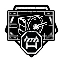
Bloquea puertas. Desde marzo de 2026 tiene cargas y ha mejorado mucho.
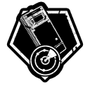
Ves a los enemigos a través de las paredes. Desde marzo de 2026 se enciende y apaga como la visión nocturna.
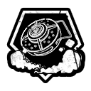
Una mina de humo que ciega a los enemigos. Tarda 4 s en colocarse, demasiado para una huida.
Rangos según GameRant (29-jul-2026) y FandomWire (9-oct-2026): coinciden en que Aturdimiento e Interceptor son lo más fuerte. Nombres tal como salen en tu juego.
Se compran a Dorris por 2 vales. Llevas uno por ranura, y cada ranura se abre en el nivel que pone en tu menú.
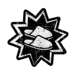
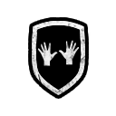
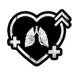
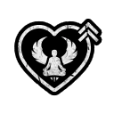
Los mejores (rango S de GameRant): Noise Reduction, Smash, Last Chance y Boosted.
Son 23 recetas de reactivos a 2 vales cada una. Tu menú lo dice: «Completa la categoría 1 primero», así que el orden solo decide qué tienes antes.
7 recetas · 14 vales · LA TUYA AHORA
9 recetas · 18 vales
7 recetas · 14 vales
Qué llevar y cuándo gastarlo.
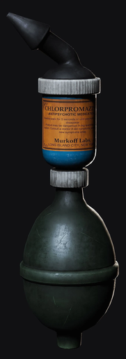
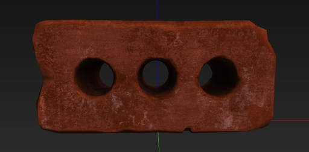
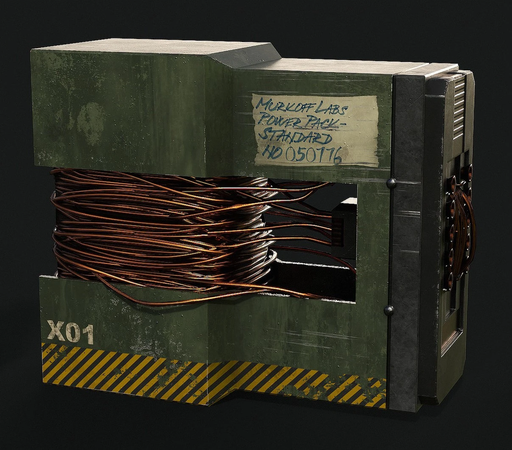
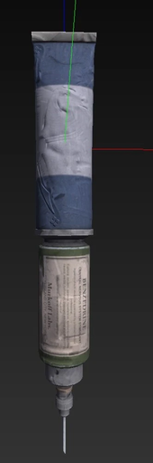
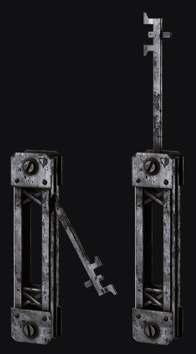


Para más adelante: así sabrás qué te espera.
| Qué | 1.ª opción | Opcional |
|---|---|---|
| Tu equipo | No cuenta. El artefacto, los amplificadores y las recetas se eligen durante la partida entre 3 al azar. | |
| Artefacto | Interceptor con Pacificador | Aturdimiento |
| Medicina | Last Chance o Self Revive | Boosted no en solitario: se puede repetir y solo usas uno |
| Habilidad | Evasive Maneuver | Smash |
| Siempre | Haz el objetivo secundario y mira las variantes antes de correr: con No Running, correr te electrocuta. | |
| Semanal | Se renueva los martes a las 10:00 ET: 9:00 en Bogotá hasta el 31-oct, 10:00 de noviembre a marzo. | |
| Qué | Dato |
|---|---|
| Qué hace | Vuelves del 99 al 1 y se bloquea todo lo que no hayas dejado fijo. |
| Qué ganas | 1 ficha permanente por recaída: deja fijo un artefacto, una mejora, una receta o un amplificador. |
| Qué fijar primero | Lo que más uses: Aturdimiento o Interceptor, o la receta Inventario ampliado |
| Qué conservas | Los cosméticos, las estadísticas, las monedas (menos los vales) y la partida de Escalada. |